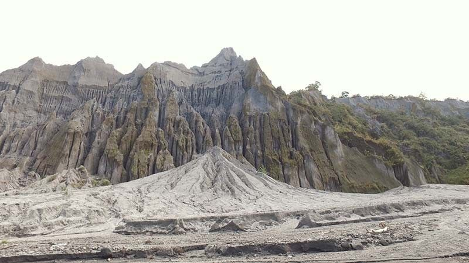
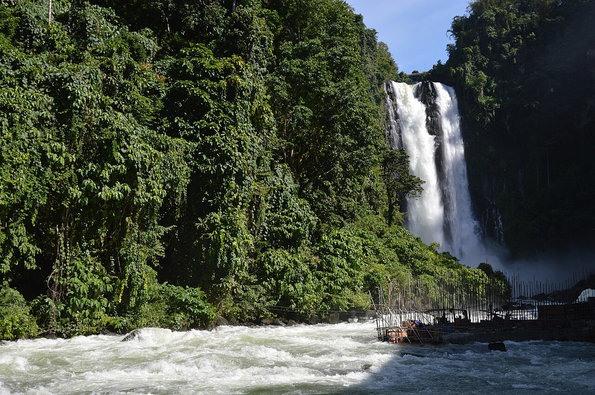

Natural Wonders
Tarlac is home to some of the most awe-inspiring natural landscapes in Central Luzon. From the turquoise crater lake of Mt. Pinatubo to the vast lahar plains carved by the 1991 eruption, nature here is raw, dramatic, and unforgettable.
-
Mt. Pinatubo Crater Lake
-

Lahar Plains of Capas -

Hidden Waterfalls
- Mt. Pinatubo Crater Lake: A stunning turquoise-green lake nestled inside the caldera of one of the world's most famous volcanoes. A must-trek for adventure seekers.
- Lahar Plains of Capas: The sweeping grey lahar fields left behind by the 1991 eruption create an otherworldly landscape unlike anywhere else in the Philippines.
- Hidden Waterfalls: Tucked away in the foothills of Tarlac are several cascading waterfalls accessible by short hikes, offering cool refreshment and natural scenery.